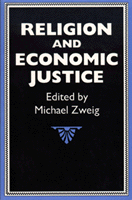

<body bgcolor="#FFFFFF" text="#000000" link="#0000FF" vlink="#CC0000" alink="#CC0000"><center><hr width="350" size="1" align="center" noshade>Original essays by distinguished contributors from economics, religious ethics, and biblical studies<hr width="350" size="1" align="center" noshade><p><a href="https://cdcshoppingcart.uchicago.edu/Cart/ChicagoBook.aspx?ISBN=9780877228479&&PRESS=temple" target="_top">Buy this book!</a> | <a href="https://cdcshoppingcart.uchicago.edu/Cart/Cart.aspx?PRESS=temple" target="_top">View Cart</a> | <a href="https://cdcshoppingcart.uchicago.edu/Cart/Cart.aspx?PRESS=temple" target="_top">Check Out</a></p><p></p></center><!--none//--><h1>Religion and Economic Justice</h1>
<h3>edited by Michael Zweig</h3>
<P>cloth 0-87722-847-7 $49.95, Sep 91, <FONT COLOR=#990033>Out of Print</FONT>
<br>paper 1-56639-003-6 $36.95, Aug 92, <FONT COLOR=#990033>Available</FONT>
<br>Electronic Book 1-43990-166-X $36.95 <FONT COLOR=#990033>Out of Print</FONT>
<BR> 272 pp
6x9
</P><BLOCKQUOTE><I>"A superb book, containing some of the best work of highly distinguished figures in economics, religious ethics, and biblical studies.... There is no doubt, this book is timely, diverse yet coherent, excellent, and engaging."</I>
<br>&#151<b>Cornel West</b><I></I></BLOCKQUOTE>
<p>As Eastern European economies move to capitalism, many people there hope for a better life. But capitalism is no guarantee of prosperity. Economic deprivation, war, social marginalization, and powerlessness mark the lives of millions and spark social movements for economic justice aimed at correcting these conditions. Often these movements are based in religious communities, their activists motivated by religious commitment to human dignity and the need for personal empowerment. Although the new theology contains an economic critique, little dialogue has taken place between the religious and economic communities on matters of economic analysis. <I>Religion and Economic Justice</I> seeks to develop this exchange.
<p>This book contains original essays by distinguished contributors from economics, religious ethics, and biblical studies. The authors provide a powerful critique of the individualism which underlies mainstream economic analysis and which fragments our communities, a critique that extends to the values implicit in the market system. The authors also show how social marginalization and economic deprivation are the consequences of economic organization, not simply the failings of individuals.
<BR>&nbsp;<h2>Reviews</h2>
<p><I>"This collection of essays seeks to effect a junction between religiously based and Marxist critiques of the present economy and represents usefully a significant strand of critical thought."</I>
<br>&#151<b>Kenneth J. Arrow</b>, Joan Kenney Professor of Economics, Stanford University and Nobel Laureate in Economics
<p><I>"The essays are all substantive, from prominent writers.... What is best about the book is its focus on new developments between theology and economic life and its fresh thoughts on the changes in theory and policy that we need."</I>
<br>&#151<b>Beverly Harrison</b>, Union Theological Seminary
<BR>&nbsp;<h2>Contents</h2><P>
<p>Preface
<p><b>Part I: Terms for a Dialogue</b>
<br>1. Economics and Liberation Theology &#150 Michael Zweig
<p><b>Part II: Religious Perspectives on Economic Justice</b>
<br>2. Values and Economic Structures &#150 Norma K. Gottwald
<br>3. An Ethical Critique of Capitalism: Contributions of Modern Catholic Social Teaching &#150 Gregory Baum
<br>4. Economic Justice for Whom? Women Enter the Dialogue &#150 Pamela K. Brubaker
<br>5. Jewish Liberation Theology and Emancipatory Politics &#150 Michael Lerner
<p><b>Part III: Structures of Modern Capitalism</b>
<br>6. Man-Made Starvation in Africa &#150 Ann Seidman
<br>7. Global Economic Structures: Their Human Implications &#150 Amata Miller, IHM
<br>8. Class and Poverty in the U.S. Economy &#150 Michael Zweig &#150
<p><b>Part IV: Political Implication</b>
<br>9. The Economy Produces People: An Introduction to Post-Liberal Democracy &#150 Samuel Bowles and Herbert Gintis
<br>10. Individual and Community in Society and Nature &#150 Frances Moore Lapp� and J. Baird Callicott
<p>Contributors
</P><BR>&nbsp;<H2>About the Author(s)</H2>
<P><b>Michael Zweig</b> is Professor of Economics at the State University of New York at Stony Brook.</P>
<P>Contributors: Gregory Baum, Samuel Bowles, Pamela K. Brubacker, J. Baird Callicott, Herbert Gintis, Norman K. Gottwald, Francis Moore Lapp�, Michael Lerner, Amata Miller, IHM, Ann Seidman, and the editor.</P>
<BR><H2>Subject Categories</H2>
<p><A HREF="/tempress/political.html" TARGET="_top">Political Science and Public Policy</a>
<BR><A HREF="/tempress/religion.html" TARGET="_top">Religion</a>
<BR><A HREF="/tempress/business.html" TARGET="_top">Business/Economics</a>
</p>
<p align="center"><a href="https://cdcshoppingcart.uchicago.edu/Cart/ChicagoBook.aspx?ISBN=9780877228479&&PRESS=temple" target="_top">Buy this book!</a> | <a href="https://cdcshoppingcart.uchicago.edu/Cart/Cart.aspx?PRESS=temple" target="_top">View Cart</a> | <a href="https://cdcshoppingcart.uchicago.edu/Cart/Cart.aspx?PRESS=temple" target="_top">Check Out</a></p><p><font face="Arial" size="1"><a href="copyright.html" onMouseOver="window.status='Web Copyright Policy';return true;" onMouseOut="window.status=''" title="Web Copyright Policy">&copy;</a> 2015 <a href="http://www.temple.edu" target="new" onMouseOver="window.status='Link to Temple University home page';return true;" onMouseOut="window.status=''" title="Link to Temple University home page">Temple University</a>. All Rights Reserved. http://www.temple.edu/tempress/titles/839_reg.html</font></p>